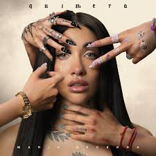

La Nena de Argentina
María Becerra, conocida como "La Nena de Argentina", es una exitosa cantante, compositora y ex-youtuber argentina nacida el 12 de febrero de 2000 en Quilmes. Se consolidó como referente del pop urbano y se convirtió en la primera mujer argentina en agotar el Estadio River Plate con un show 360° en 2024.
